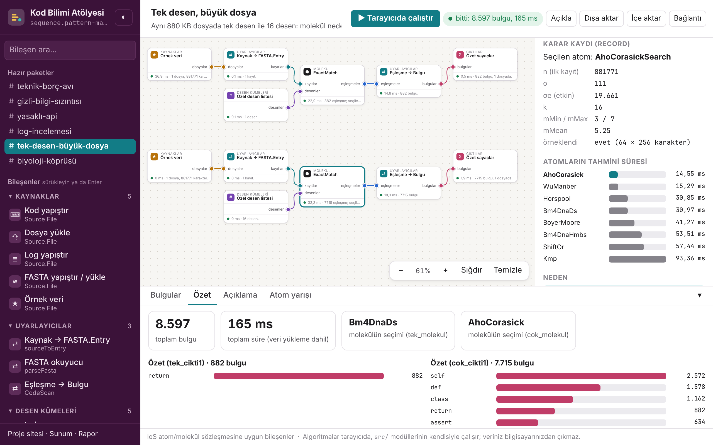

Kod Bilimi Atölyesi
Akıllı tam desen eşleştirme: IoS atomları, seçici bir molekül ve yazılım mühendisliği için tarayıcıda bir iş akışı düzenleyicisi
[ders kodu ve adı] · [öğretim elemanı]
Baki [soyad] · [Üye 2 ad soyad]
1 / 10
Problem
- Bir metinde bir ya da çok desenin geçtiği bütün yerleri bulmak: genomda kesim bölgesi, kodda
TODO, logda ERROR. - Onlarca algoritma var, hiçbiri her durumda en hızlı değil: kısa desende iyi olan uzun desende, tek desende iyi olan çok desende geri kalır.
- Soru: girdiye bakıp doğru algoritmayı kendisi seçen bir bileşen yazılabilir mi, ve seçimi doğru mu?
2 / 10
IoS fikri → yazılım mühendisliği
IoS (biyoloji)
- Atom: tek dönüşüm, sözleşmesi sabit
- Molekül: aynı görevi yapan atomlardan seçer
- İş akışı: bileşenleri bağlar
Bizim aktarımımız
- Kaynak dosya →
FASTA.Entry uyarlayıcısı: atomlara dokunmadan kod ve log - Hazır desen kümeleri: todo, secrets, banned-api, errors
- Atölye: türlü uçlarla iş akışı, CI kapısı ("bulgu varsa başarısız")
Kodda 100'den fazla farklı karakter var ama etkin alfabe küçük (σe = 1/Σp²): kazanan atom DNA'dakinden farklı.
3 / 10
Atomlar
| Atom | Fikir | Grup |
|---|
| BoyerMoore | Kötü karakter ve iyi sonek kurallarından büyük olanı kadar kayar. | hazır örnek |
| Horspool | Pencerenin son karakterine bakar | A |
| ShiftOr | Bit paralel | A |
| Kmp | Başarısızlık işleviyle metinde hiç geri dönmeden ilerler. | B |
| AhoCorasick | Bütün desenlerden tam bir otomat kurar | C |
| WuManber | Çok desenli Horspool | C |
| Bm4DnaDs | Horspool + metnin sonuna desen kopyası (sentinel) + üç kez açılmış atlama döngüsü | A |
| Bm4DnaHmbs | Son q karakterin bit kaydırmalı özetiyle (q-gram) kayar | A |
Hepsi aynı girdi/çıktı; NaiveSearch ile eleman eleman aynı sonuç (360 rastgele vaka, gerçek veri).
4 / 10
Molekül ve maliyet modeli
- İlk kaydın şekli: n, σ, σe, k, mMin, mMax, mMean
- Her atom kendi özelliklerini verir (ör. Horspool: pencere sayısı = Σ n / E[kayma])
- Tahmin = Σ katsayı × özellik; katsayılar 180 vakalık ızgarada negatif olmayan en küçük kareler ile
- En ucuz atom seçilir;
record = şekil, tahminler, seçim, neden - v4: şekil 64 × 256 karakterlik örneklemden → şekil hesabı medyanda 0,648 ms'den 0,063 ms'ye (D)
5 / 10
CANLI: atölye

npm run web → /web/- Sol panel: # tek-desen-büyük-dosya
- Tarayıcıda çalıştır → rozet: bulgu sayısı ve süre
- ExactMatch kutusu → karar kaydı: tek desende Horspool ailesi (bm4DNADS), 16 desende Aho-Corasick
- Açıkla → iş akışı düz Türkçe
- Yedek: # gizli-bilgi-sızıntısı (kapı kaldı)
Doğrulama (taze D, v4, 120 vaka)
| Politika | En hızlı | %10 içinde | Geo. ort. | En kötü | Toplam / en iyi |
|---|
| ExactMatch (auto) | %76,7 | %84,2 | 1,051 | 2,00× | 1,033 |
| ExactMatch (uçtan uca, karar dahil) | %58,3 | %70,0 | 0,990 | 3,26× | 1,064 |
| hep WuManber | %58,3 | %67,5 | 1,131 | 2,78× | 1,198 |
| hep AhoCorasick | %33,3 | %36,7 | 1,632 | 5,02× | 1,291 |
| Allmer 2016 kuralı | %2,5 | %5,8 | 2,543 | 18,71× | 2,658 |
Tek desen (E): seçilen 1,081, uçtan uca 1,300; Allmer 1,192, hep Horspool 1,198.
7 / 10
Bir yanlış seçim: D, vaka 119
İngilizce benzeri metin (kalibrasyonda yok), n = 531 186, k = 24, m = 92/37/150
| Atom | Tahmin (ms) | Ölçülen (ms) |
|---|
| Bm4DnaHmbs (seçilen) | 7,23 | 12,57 |
| WuManber (en hızlı) | 11,17 | 6,28 |
- Yavaşlama 2,00×: iki tahmin ters yönde yanıldı (1,74× az, 1,78× fazla).
- Model metni tekdüze rastgele sayar. Olası neden: kelimelerden oluşan metinde sık q-gramlar desende de geçer, q-gram kayması öngörülenden kısa kalır; Wu-Manber'in blok tablosu ise bu metinde öngörülenden seyrek doğrulama yapar. (Doğrulamadan sonra model değiştirilmedi.)
8 / 10
Sınırlar
- Tek desen: seçim zayıf; uçtan uca molekül hep Horspool / Allmer kuralının gerisinde (E)
- İkili alfabe: E'nin en kötü 5 vakasının 5'i
- Karar ilk kayda göre (sözleşme): ilk dosya küçükse seçim kötü olabilir
- Ölçüm: D'de uçtan uca oran 1'in altına düştü (medyan 0,951) → düzenek küçük farkı ayıramıyor; karar süresi ayrıca ölçüldü (medyan %4,1)
- v3 ve v4 farklı makinelerde ölçüldü; fark ayrıştırılamaz
9 / 10
Ekip ve katkılar
| Üye | Katkı |
|---|
| Baki [soyad, numara] | [...] |
| [Üye 2 ad soyad, numara] | [...] |
Yapay zekâ kullanımı ders politikasında serbest; kod, testler, atölye, site, rapor ve bu slaytlar Claude Code ile üretildi, sayılar çalıştırılan komutlardan. Sorular: docs/sunum.md.
10 / 10